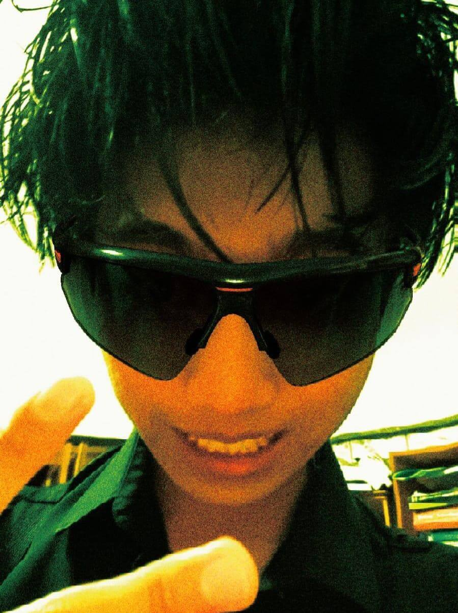
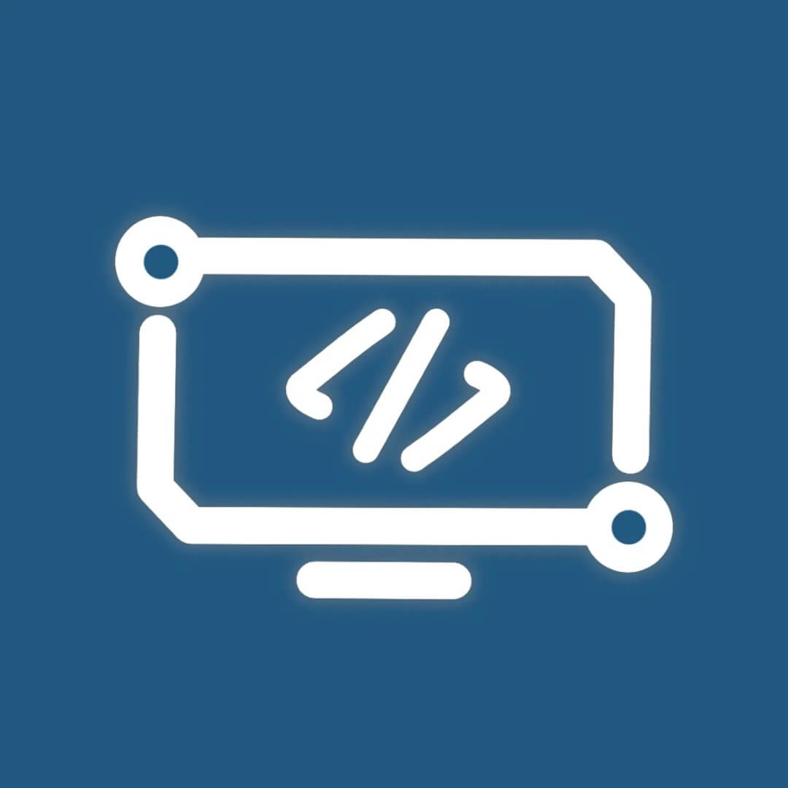
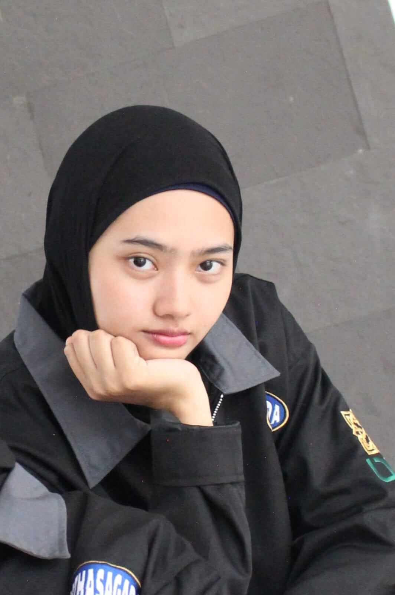
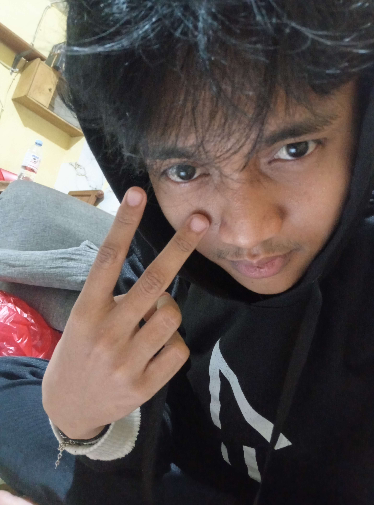
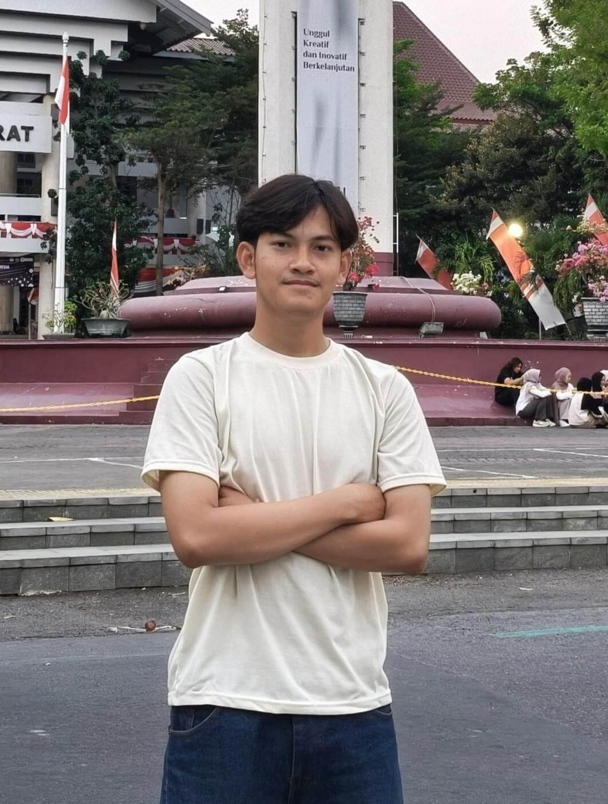

INFONIC 2026
Orientasi & Pembekalan • Keluarga Besar Mahasiswa Informatika
“A Place to Belong, A Place to Become”
Eksplorasi Rangkaian Kegiatan
Orientasi & Pembekalan • Keluarga Besar Mahasiswa Informatika
Membangun rasa saling memiliki di lingkungan yang ramah dan terbuka. Setiap mahasiswa baru didampingi secara dekat oleh Kakak Pembimbing (Kabim) agar merasa nyaman dan diterima sepenuhnya.
Pondasi awal untuk mengembangkan potensi terbaik, baik di ranah akademik, kepemimpinan organisasi HMIT, minat bakat di Study Club (SCIT), maupun kesiapan karir industri teknologi.
Mengasah kerja sama tim melalui Informatics War, analisis dan solusi digital UMKM nyata pada Ideathon, hingga personal branding LinkedIn dan resume berstandar ATS.

Adzka
Dira Gumilar
Gumilar
 Sesa
Sesa

Adiba Iqbal
Iqbal
 Selvi
Selvi
 Fauzan
Fauzan
 Husna '25
Husna '25

Zidan Kia
Kia
 Zikri
Zikri
 Rasty
Rasty

Fairuz Hanum
Hanum
 Fajri
Fajri
 Husna '24
Husna '24
 Raka
Raka
 Syauqi
Syauqi
 Vandi
Vandi
 Varel
Varel
 Romadhon
Romadhon
 Rafi
Rafi
git init, commit, branching, hingga push ke remote repository.Tidak sama sekali. INFONIC dirancang sebagai fondasi awal bagi seluruh mahasiswa baru dari berbagai latar belakang sekolah. Semua materi diperkenalkan secara bertahap dari nol dengan pendampingan langsung oleh Kabim.
Tenang! Untuk sesi perlombaan atau workshop, kamu bisa berkoordinasi dengan teman satu gugusmu untuk berbagi laptop (*pair exploration*), atau menggunakan smartphone untuk menyimak materi presentasi.
Lokasi dan rute Makrab sengaja dirahasiakan oleh panitia sebagai bagian dari pengalaman kejutan puncak angkatan! Titik kumpul dan waktu pemberangkatan akan diumumkan resmi mendekati tanggal 10 Oktober melalui Kabim gugusmu.
Segera hubungi Kakak Pembimbing (Kabim) gugusmu masing-masing sebelum acara dimulai dengan melampirkan surat keterangan izin atau alasan yang sah untuk dicatat oleh panitia absensi.
Ketentuan dresscode dan barang bawaan wajib dapat dilihat langsung pada kartu jadwal masing-masing acara di atas. Selalu patuhi instruksi Kabim terkait atribut gugus dan kartu identitas (Co-Card).